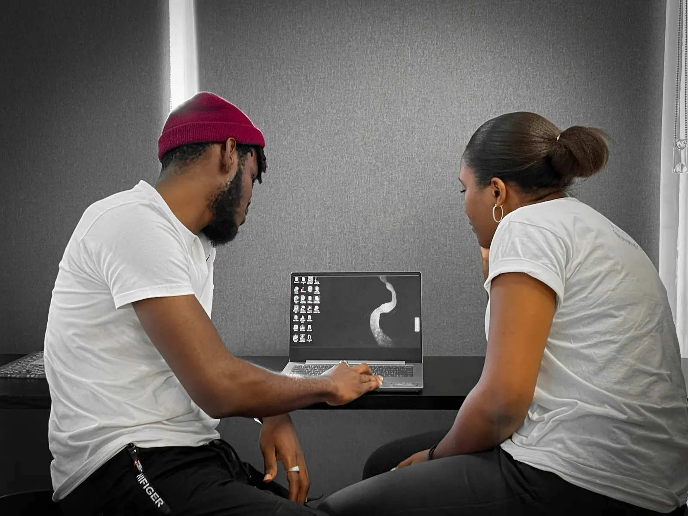
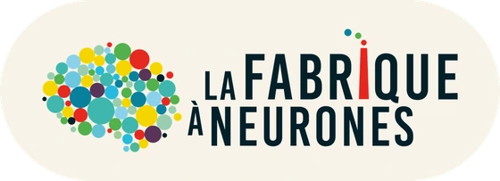

Scientifiquement validé
Méthodes issues de la recherche en neurosciences cognitives, pas du développement personnel.

Dirigeants, responsables RH, managers ou acteurs publics : vos équipes font face à des tensions,
des difficultés de communication ou une baisse d'engagement ?
J'accompagne les organisations en Guadeloupe avec des ateliers cognitifs basés sur les neurosciences
pour mieux comprendre ce qui influence les comportements au travail et agir concrètement sur les
pratiques managériales.
Une approche certifiée par La Fabrique à Neurones qui donne aux équipes des clés pour mieux
collaborer, mieux décider et construire un environnement de travail plus serein.
1 Baromètre Absentéisme Malakoff Humanis, édition 2025. 2 Agence européenne pour la sécurité et la santé au travail (EU‑OSHA), analyses coûts-bénéfices en PME : 2 à 5 € de retour pour 1 € investi. Voir tous les indicateurs
Mon périmètre, en clair.
Mon intervention porte sur les pratiques managériales, pas sur la prise en charge de la santé des personnes. À travers mes ateliers, les managers comprennent comment le cerveau fonctionne au travail afin d'adapter leurs pratiques et leurs modes de management. Cette approche relève de la prévention primaire : elle agit en amont sur les facteurs organisationnels qui génèrent des tensions, avant qu'ils ne deviennent des risques psychosociaux.
Mon rôle consiste à aider les équipes à observer, comprendre et objectiver ce qui se joue dans leur organisation et leurs pratiques de management. Je ne réalise ni accompagnement thérapeutique, ni évaluation clinique de la souffrance individuelle. Lorsqu'une situation nécessite un suivi médical, psychologique ou une évaluation des risques professionnels, j'oriente naturellement vers les professionnels compétents : médecin du travail, service de prévention et de santé au travail ou psychologue du travail.
Vos meilleurs éléments partent. Recruter, former, perdre, encore et encore. Le coût humain et financier s'accumule.
Réunion tendue lundi matin. Deux collègues qui s'ignorent. Ambiance glaciale. Vous vous sentez impuissant à changer ça.
Les arrêts s'accumulent. La motivation s'effondre. La créativité et l'engagement ont disparu de vos équipes.
Vous portez tout seul. Vous imposez de l'obéissance au lieu d'obtenir de l'engagement. Ça ne peut pas durer.
Ce n'est pas un problème de volonté. C'est un problème de cerveau.
Je veux comprendre ce qui se passeUne intervention sur les pratiques managériales ne se juge pas à l'ambiance d'une salle le jour J. Elle se juge sur des chiffres que vous détenez déjà. Voici ceux que je vous propose de suivre, avec leur niveau de référence actuel pour situer votre entreprise.
Ces repères servent à situer votre situation, pas à promettre un résultat. Chaque contexte est différent, et l'évolution de ces indicateurs dépend de nombreux facteurs qui dépassent le cadre d'une intervention en management. Le suivi reste le vôtre : je vous aide à construire la mesure de départ et à lire ce qui bouge.
Certifié La Fabrique à Neurones, je suis le seul consultant en Guadeloupe à proposer des ateliers cognitifs scientifiquement validés pour faire évoluer les pratiques managériales. En 4 séances, vos managers comprennent pourquoi leurs réflexes ne fonctionnent pas, et ce qu'ils doivent faire à la place.
Méthodes issues de la recherche en neurosciences cognitives, pas du développement personnel.
2h d'atelier, des résultats immédiats. Vos équipes vivent l'expérience cognitive en direct.
Exemples terrain Guadeloupe/Antilles, compréhension du tissu économique et humain local.

Cette certification, c'est votre garantie. Chaque atelier que j'anime est construit et validé par La Fabrique à Neurones, organisme de référence en neurosciences appliquées au travail. Pas de recettes miracles ni de développement personnel : des méthodes issues de la recherche, testées et mesurables. Je suis le seul consultant certifié en Guadeloupe.
« Les 5 réflexes managériaux qui épuisent votre équipe, et les 5 alternatives issues des neurosciences »
+ Autodiagnostic : quel type de manager êtes-vous ?
ou accédez directement au guide
Accéder au guideAucun spam. Désabonnement en 1 clic. Données protégées (RGPD).
Un audit offert, en visio ou sur site, pour identifier ce qui, dans vos pratiques d'encadrement, use vos équipes. Sans engagement.
Réserver mon audit gratuit